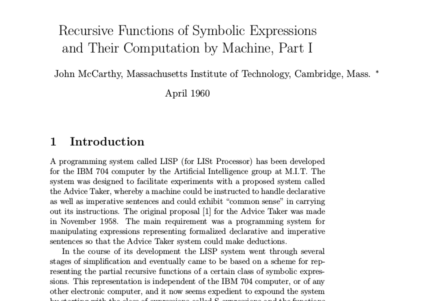
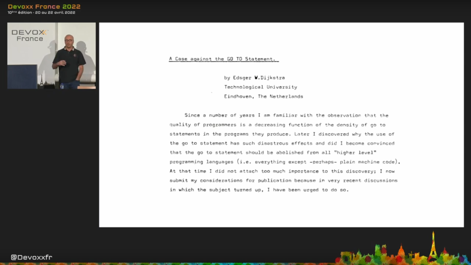
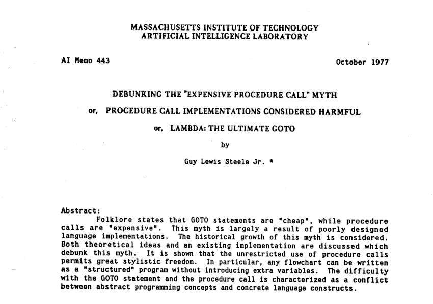

Fermé pour inventaire
Histoire et mécanique des « closures »
Frédéric Cabestre
I'm not a number, I'm a free man.— Number 6, The Prisoner

John MacCarthy

fun filter(list: List<Int>, predicate: (Int) -> Boolean): List<Int> { fun filterAux(list: List<Int>, predicate: (Int) -> Boolean, acc: List<Int>): List<Int> = when (list.isEmpty()) { true -> acc false -> { val first = list.first() if (predicate(first)) { filterAux(list.drop(1), predicate, acc + first) } else { filterAux(list.drop(1), predicate, acc) } } } return filterAux(list, predicate, emptyList()) }Kotlin
fun filter(list: List<Int>, predicate: (Int) -> Boolean): List<Int> { fun filterAux(list: List<Int>, predicate: (Int) -> Boolean, acc: List<Int>): List<Int> = when (list.isEmpty()) { true -> acc false -> { val first = list.first() if (predicate(first)) { filterAux(list.drop(1), predicate, acc + first) } else { filterAux(list.drop(1), predicate, acc) } } } return filterAux(list, predicate, emptyList()) }Kotlin
filter(listOf(1, 2, 3, 4, 5, 6, 7, 8, 9, 10)) { it % 2 == 0 }Kotlin
filter(listOf(1, 2, 3, 4, 5, 6, 7, 8, 9, 10), { it % 2 == 0 })Kotlin
filter(listOf(1, 2, 3, 4, 5, 6, 7, 8, 9, 10), { someInt -> someInt % 2 == 0 })Kotlin
Les fonctions (récursives) décortiquées
Guy L. Steele Jr.

Frédéric Cabestre
@fcabestre